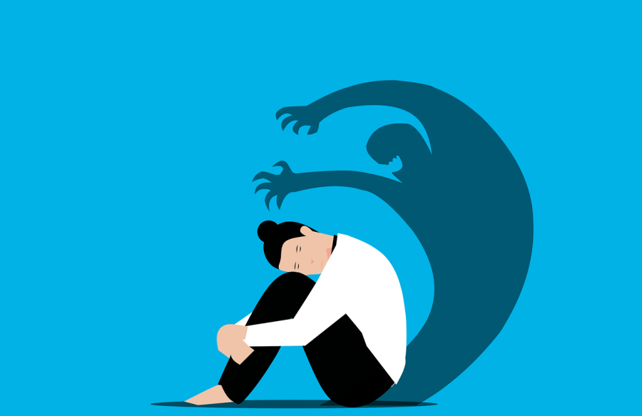
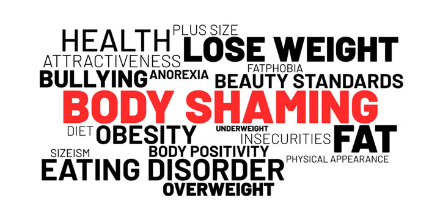

Negatives of Body shaming
Being body shamed is very humiliating. It can lead to increased feelings of low self –esteem, self- image and self-worth. It can have an individual socially isolate themselves, feel lonely, lead to depression and anxiety. An individual can adopt unhealthy eating habits leading to physical health concerns as well. People facing this issue also more likely to die from any cause, regardless of their body mass index.

How we can prevent body shaming
Preventing body shaming is possible in many ways. Before we are able to support the people around us we must put ourselves in others shoes. Awareness of other persectives and being supportive of each other is the key to stopping Body shaming.

What Is Body Shaming
Body shaming is the action of stigmatizing someone by making critical comments about the shape, size or appreance of their body
